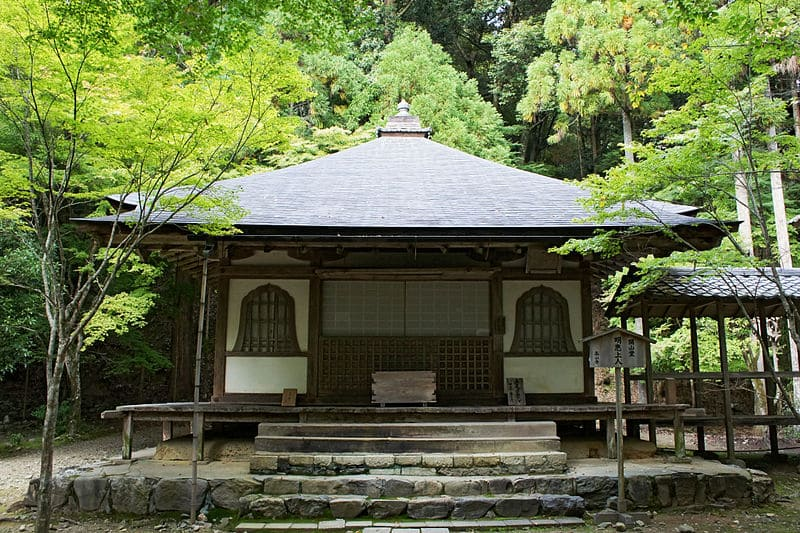

Kiyomizu-dera
Le temple bouddhiste qui offre un vue époustouflante de Kyoto.

Kōzan-ji
Le temple bouddhiste avec le plus vieux manga de l'histoire.
Tō-ji
La fameuse pagode à 5 niveaux de Kyoto.
Kamigamo
Un des plus anciens sanctuaire Shinto de Kyoto.
Jingo-ji
Le temple bouddhiste abritant plusieurs statues vieilles de plusieurs siècles.
Saimyō-ji
Le temple bouddhiste situé à mi-chemin des temple Kōzan-ji et Jingo-ji.

Saihō-ji kokedera
Le temple de la mousse.

Byōdō-in
Le temple Byodoin, flottant paisiblement sur son étang.